Roxbury
Mercantile
Brand revitalization for a beloved Lowcountry institution — southern-inspired logo, menus, apparel, and collateral since 1926.

Brand revitalization for a beloved Lowcountry institution — southern-inspired logo, menus, apparel, and collateral since 1926.
Roxbury Mercantile has been part of the Edisto Island community since 1926 — a family-owned country store that served as the social center for locals and visitors for nearly six decades. When the original building burned down, a local shrimp boat captain opened a restaurant on the same site to keep the land in the community. The spirit survived, but the brand didn't. By the time they reached out, the visual identity was nonexistent — no logo system, no cohesive materials, nothing that communicated the weight of what this place actually means to the people around it.
Edisto Island isn't a tourist trap — it's one of the last undeveloped barrier islands on the East Coast, and the people there are protective of what's real. Roxbury Mercantile is real. It's the kind of place where the shrimp was caught that morning and the bartender knows your name. But without a visual identity, it looked like just another roadside restaurant to anyone driving through. The brand needed to communicate decades of trust in a single glance — to make new customers feel the same sense of belonging the regulars have had for generations.
I developed a full brand system rooted in the Lowcountry vernacular — hand-drawn typography, natural textures, warm palette, and a visual language that feels like it's been there as long as the oaks. The logo, menu design, apparel, packaging, and promotional materials were all built to feel lived-in, not manufactured. Every design decision was guided by one positioning idea: this is the place where history and hospitality meet.
The result is an identity that earns trust on sight — one that honors nearly a century of community roots while giving the revived Roxbury Mercantile the visual presence it deserves.
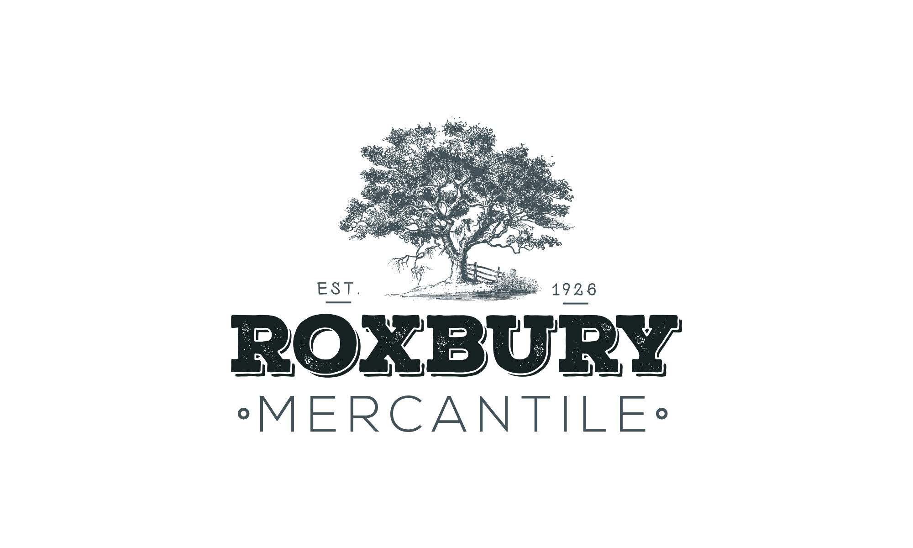
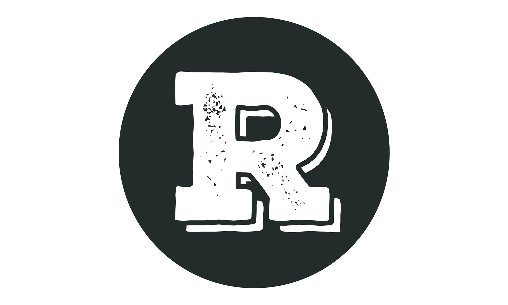
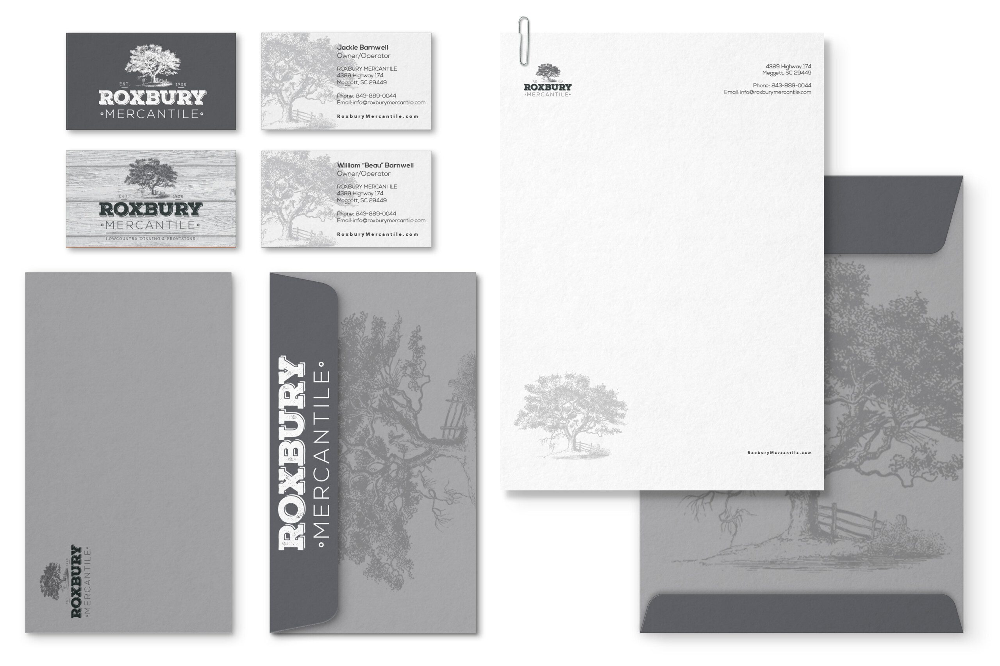
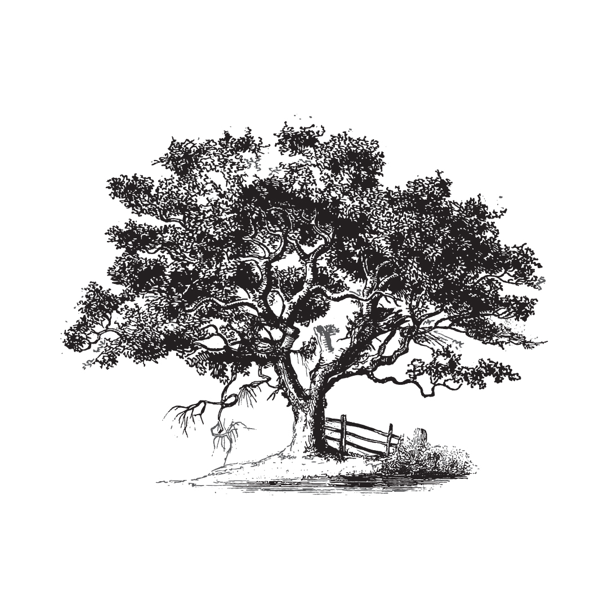
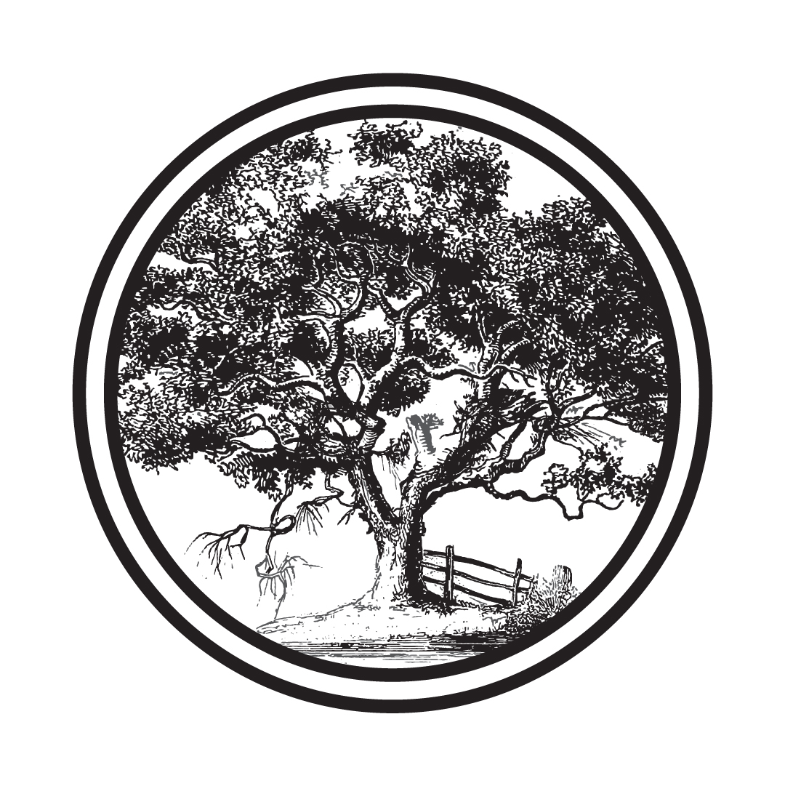
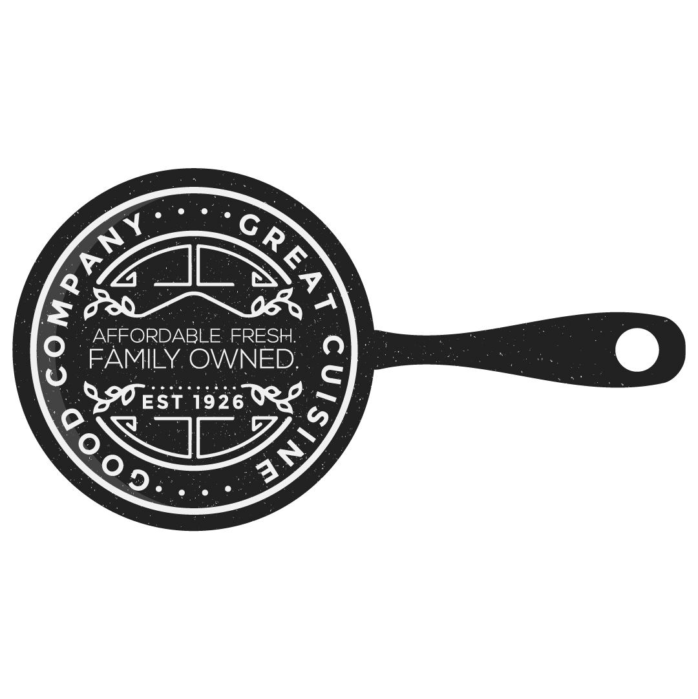
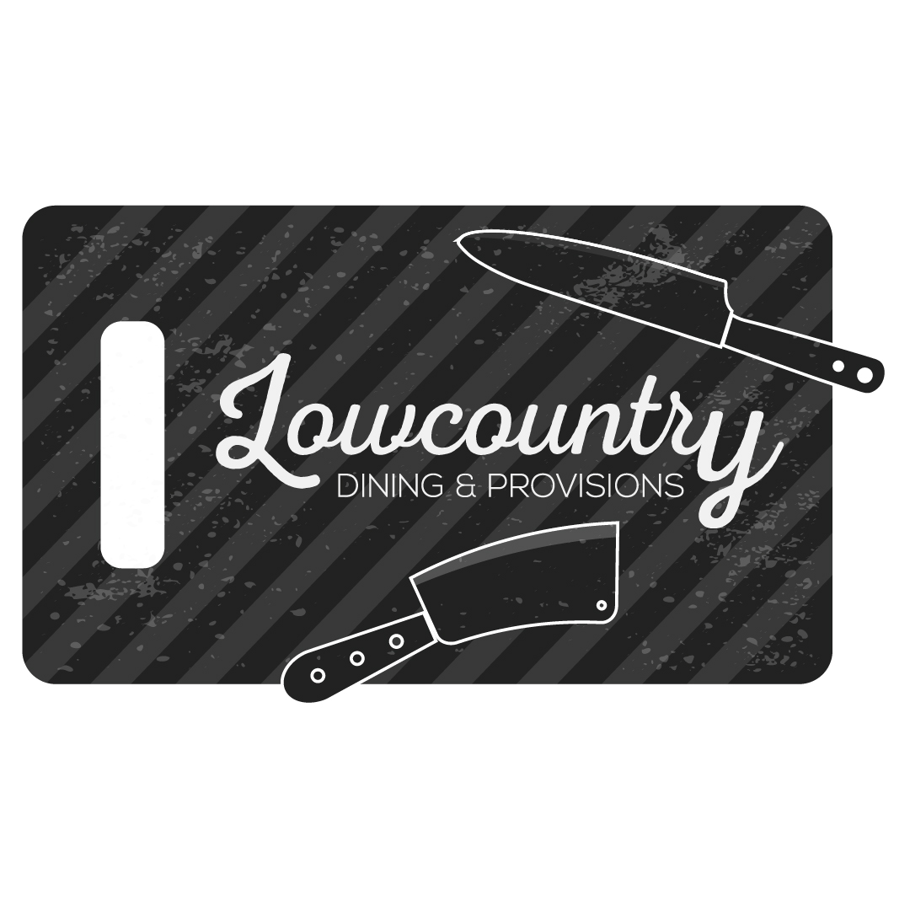
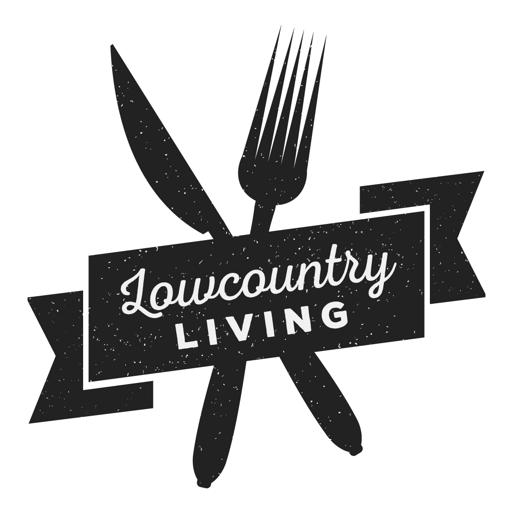
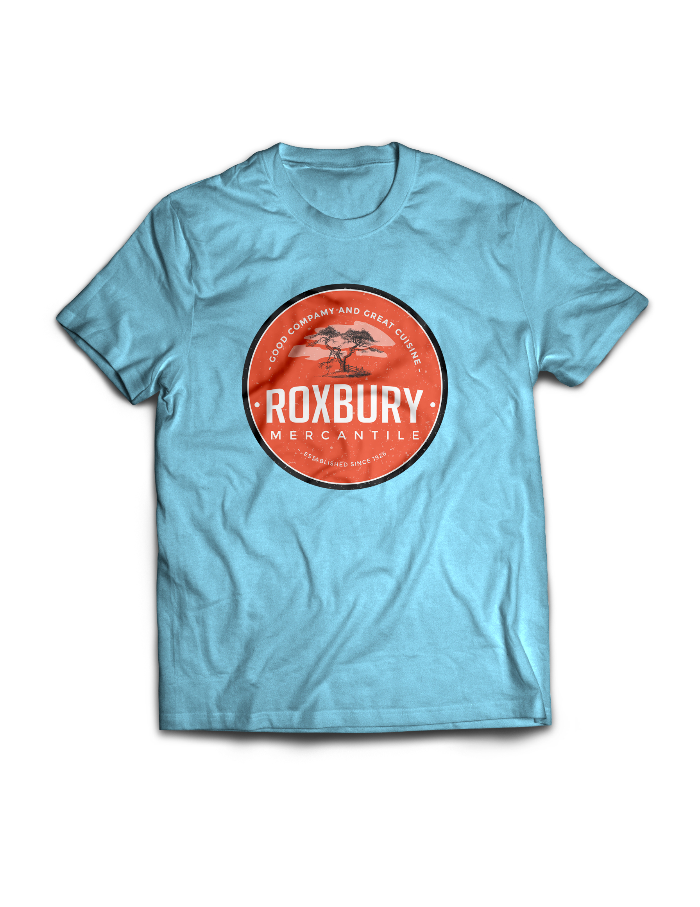
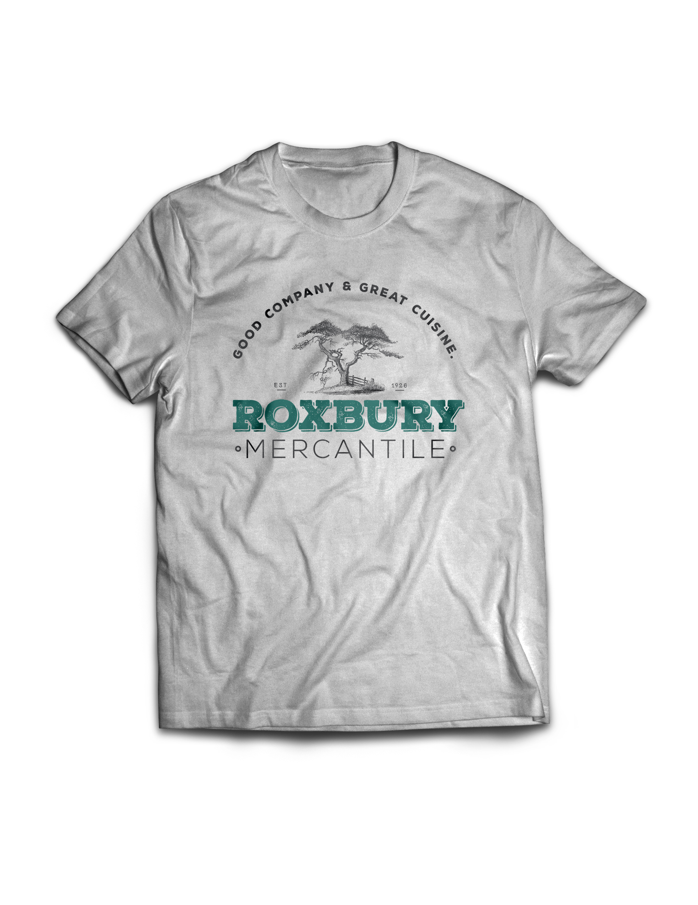
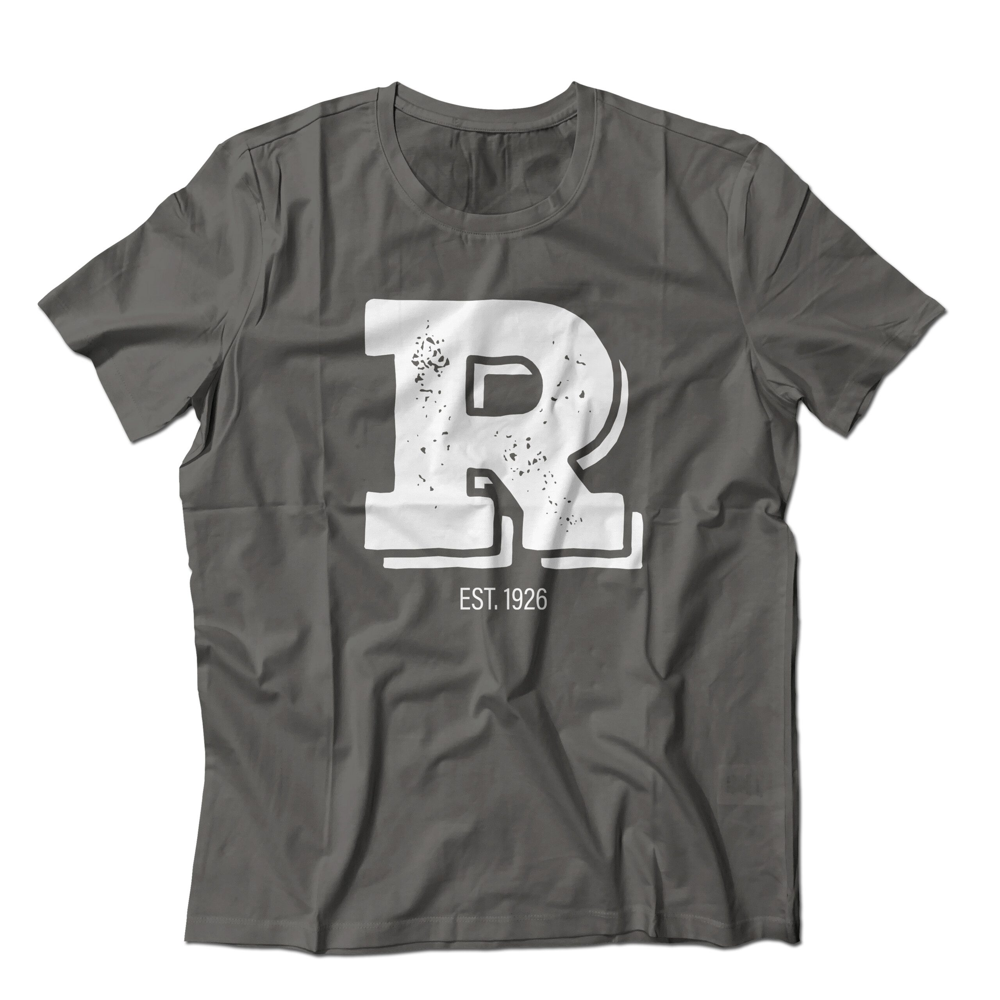